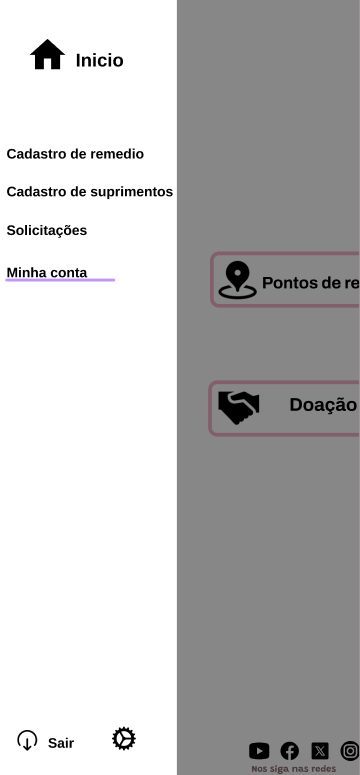
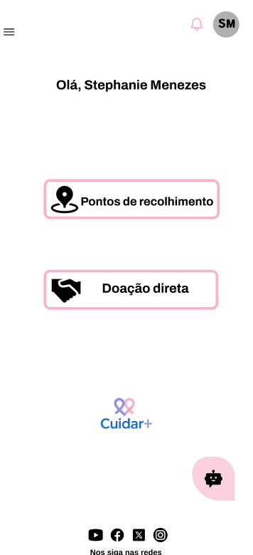
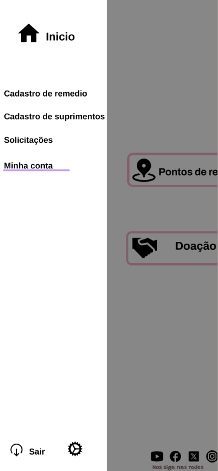
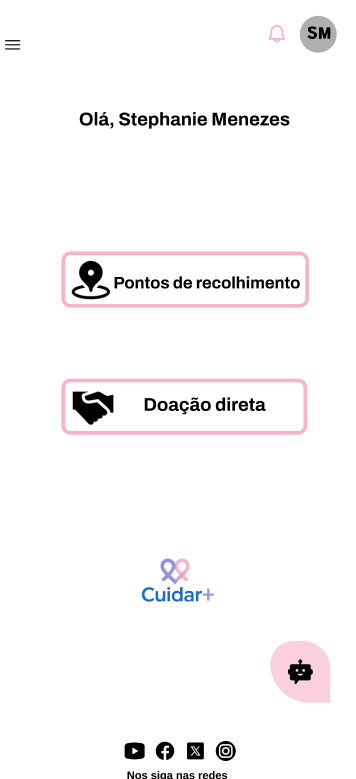

Oferecer Apoio
Como ajudar com doações e suprimentos
Se você tem medicamentos ou suprimentos em bom estado e dentro da validade, você pode transformar isso em esperança para outra família.
Importante: as doações são organizadas pelo nosso aplicativo. É no app que o doador cadastra os itens, acompanha solicitações e combina a entrega/retirada.
 



1) Cadastre os itens no app
Registre o que você deseja doar (medicamentos, fraldas, gazes, suplementos, etc). Informe validade e quantidade para facilitar o match com quem precisa.
2) Aguarde a solicitação
Quando alguém solicitar um item compatível, você recebe a informação e pode combinar a forma de entrega/retirada.
3) Faça a entrega com segurança
O app orienta o processo para ser seguro e transparente. Assim, você ajuda de forma prática e organizada.
Regras básicas para doação
Para manter tudo seguro e confiável
• Validade: doar apenas itens dentro do prazo de validade.
• Condição: itens bem armazenados, sem violação de embalagem (quando aplicável).
• Transparência: informe corretamente quantidades, validade e tipo do item.